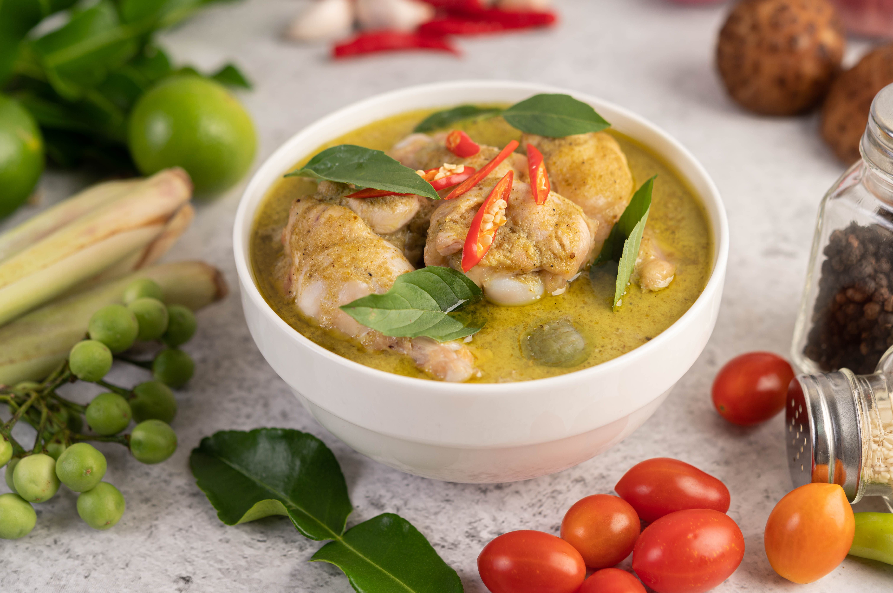

Chicken Green Curry Bowl

Ingredients
- 400 grams chicken fillet
- 1 cup brown basmati rice
- 1/2 red bell pepper
- 1/2 onion
- 1 cup mushroom
- 1 carrot
- 1 head broccoli
- 2 table spoon fresh basil
- 1/2 cup canned whole baby corn
- 1 cup unsweetened plant-based milk
- 1,5 table spoon maple syrup
- 2 tea spoon curry paste
- 1/2 tea spoon coconut extract (optional)
Directions
- Cook the rice. Add the dry rice to a pot. You will need twice as much water as rice. Add water to the pot, cover, and bring to a boil over medium-high heat. Reduce heat to low and simmer for 35-45 minutes or until the water is absorbed and the rice is soft. Check on the rice periodically to prevent any sticking or burning on the bottom. Remove from the heat, fluff with a fork, set aside. Looking for a faster option? Cook in a rice cooker or just use pre-cooked/frozen rice
- Produce prep: Wash the produce and pat dry. Slice onion, mushrooms, and carrots. Chop broccoli into florets. De-seed and dice red pepper. Finely chop basil. Drain and rinse baby corn
- In a large saute pan over high heat, cook the onion and chicken. Slowly reduce the heat as the onion browns, stirring continuously
- Add the mushrooms, broccoli, red pepper, carrots, and baby corn. Cover and cook until their colors turn bright and they still have snap/crunch
- In a saucepan over medium-high heat, combine the non-dairy milk, coconut extract (if using), maple syrup, and curry paste. Stir until warm and well combined
- Pour over the cooked vegetables and serve with the brown basmati rice and garnish with basil